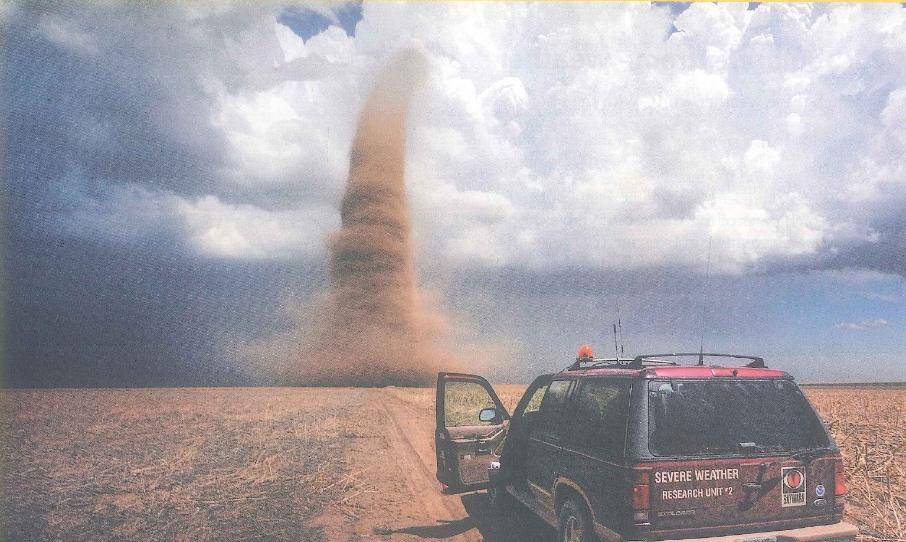
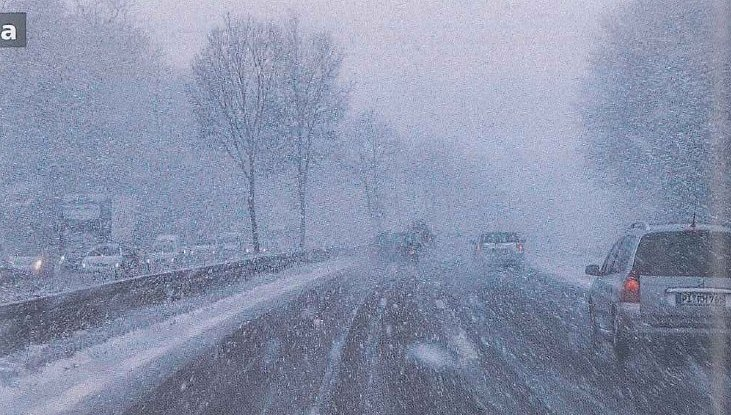
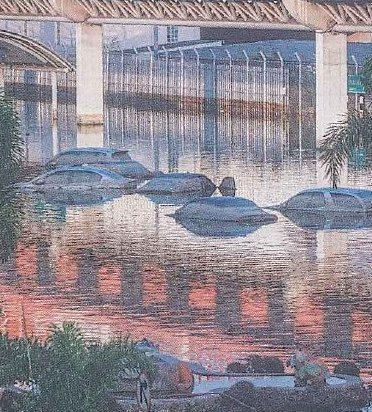
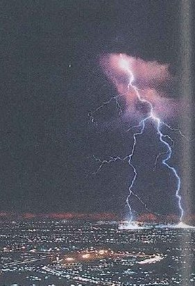
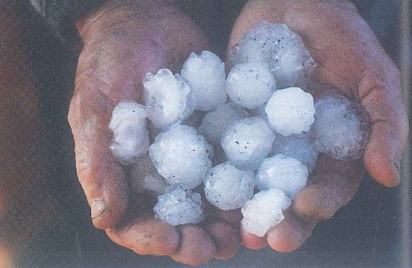
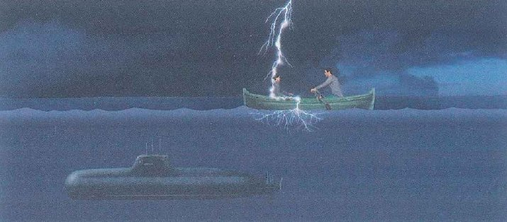
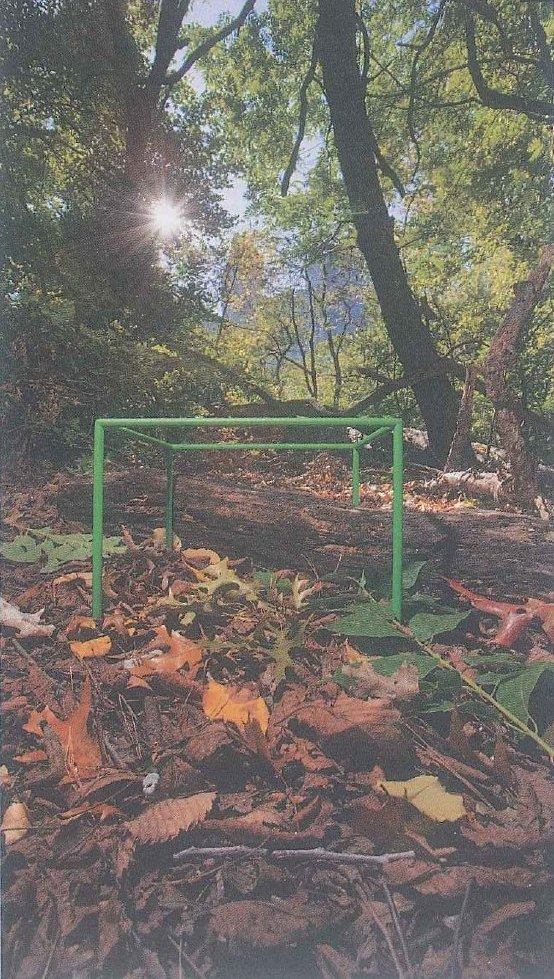
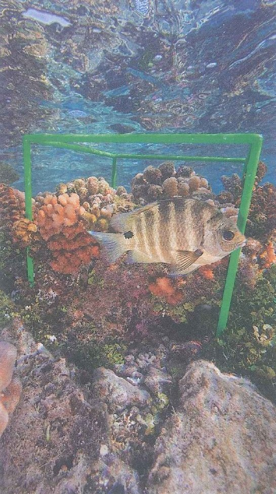

Aims of the lesson & Lead-in
Aims of the lesson
After these four periods, you should be able to:
- Name the words and chunks of the 4 groups: extreme weather, “What if …?” science, natural and man-made places, wildlife and nature photography.
- Explain how the second conditional is built and why it describes unlikely or imagined situations, not real plans.
- Recognise what every-, some-, no-, any- and -one, -body, -thing, -where add to words like nobody and somewhere.
- Use the second conditional to imagine wild weather, hopes and dreams: If I …, I’d … · What would you do if …?
- Choose between everyone, something, nowhere, anything … in statements, negatives and questions.
- Find facts, reasons and opinions in the article What if …?, the documentary about David Liittschwager and the PET Reading and Listening extras.
- Describe and evaluate, with the 7-step frame, a storm or flood you know about (Topic 7) or a wild animal you have seen (Topic 8).
- Write one cause–effect paragraph, frame by frame, imagining city life without any green spaces.
- Value the nature close to you with curiosity, and share ideas respectfully in pair and group work.
Lead-in 1 · Storms, ice and a green cube: look, guess and react

- Question 1‘Describe what you can see: the sky, the land, the car and the funnel.’
- Question 2‘Read the words on the back of the car. Who is inside, and why have they stopped so close?’
- Question 3‘If you were in the passenger seat right now, what would you say to the driver?’
Model answer
The sky is half blue and half dark grey, and a column of brown dust is whirling over completely flat fields. The car says ‘Severe Weather Research Unit’, so I’d guess the people inside are scientists who want to measure the storm. If I were the passenger, I’d be shouting at the driver to turn the car round!

- Question 1‘How far ahead can these drivers see, do you think? Why have they all switched their lights on?’
- Question 2‘Which part of the world could this be? What do the bare trees tell you about the season?’
- Question 3‘Would you rather drive through heavy snow or through a flooded street? Why?’
Model answer
I doubt they can see more than fifty metres, so the lights are there to help other drivers spot them. With no leaves on the trees, it must be the middle of winter, somewhere like northern Europe. I’d take the snow, because in a flood you have no idea how deep the water is.

- Question 1‘How deep is the water? Use the cars to measure it.’
- Question 2‘What do you think happened in the hours before this photo was taken?’
- Question 3‘If you were sent to help in this town, which health problems would you expect over the next week?’
Model answer
The water reaches the tops of the cars, so it’s probably about one and a half metres deep. My guess is that it rained hard all night and the river burst its banks before dawn. I’d expect skin infections, stomach bugs from dirty water, and plenty of older people who have run out of their regular medicine.

- Question 1‘Count the bolts of lightning. Where do you think they are hitting?’
- Question 2‘We see the flash before we hear the thunder. Why do you think that is?’
- Question 3‘Do storms like this frighten you, or do you enjoy watching them from a window?’
Model answer
I can count at least three bolts, and they seem to be hitting the edge of the city, maybe a tower or a hill. Light travels much faster than sound, so the flash reaches us first and the thunder follows a few seconds later. I actually love a good storm, as long as I’m indoors with the windows shut.

- Question 1‘What are these white balls, and where did they fall from?’
- Question 2‘Compare their size with something you know: a grape, an egg or a ping-pong ball?’
- Question 3‘What could a storm of stones this size do to a roof, a car or a field of young rice?’
Model answer
They’re hailstones, and they must have come down from a storm cloud only minutes ago, before they had time to melt. Most are about as big as a large grape, and a couple are nearly the size of a ping-pong ball. Hail like this could crack roof tiles and flatten a whole rice field in a few minutes.

- Question 1‘Look at the two people in the boat and the submarine under them. Who is in more danger?’
- Question 2‘This painting comes from a science blog. What do you think a reader asked the scientist?’
- Question 3‘Make up your own strange weather question that starts with What if … and ask your partner.’
Model answer
The two people in the boat, no question. They’re sitting up on a flat sea, and the submarine is hiding deep under the water. I think the reader wanted to know whether you’d be safe under the sea in a storm. Here’s mine: what if it rained for a whole year and never stopped?

- Question 1‘What do you think this green metal frame is for?’
- Question 2‘Is this a wild forest far from any town, or could it be a park in a huge city? What makes you think so?’
- Question 3‘How many different living things do you think you could find inside it in one afternoon?’
Model answer
It looks like a tool for measuring, as if someone wants to study exactly one small piece of ground. The trees look wild, but the ground under them is quite open and tidy, so I’d guess it’s a big city park. If I really looked closely, I bet I’d find twenty or thirty kinds of insects, worms and tiny plants.

- Question 1‘What lives inside this cube? Name everything you can see.’
- Question 2‘Why would a photographer carry the same frame to the sea, a forest and a city park?’
- Question 3‘Would you rather photograph wildlife under the sea or on a mountain top? Why?’
Model answer
There’s a striped fish, some pink and orange coral and lots of tiny plants growing on the rocks. Using one frame everywhere makes the photos easy to compare, because each place gets exactly the same amount of space. I’d go for the sea, even though I’m a terrible swimmer, because nothing on land is that colourful.
Lead-in 2 · Weather, dreams and nature: agree or disagree?
1 · Extreme weather happens more often now than when our grandparents were young.
Model answer
I’d agree. My grandmother’s village in central Vietnam used to flood once every ten years or so, and now the water comes up most autumns. Summers in Hà Nội seem to start earlier every year, too.
2 · Storm chasers take risks that nobody should take.
Model answer
Not completely. The scientists among them collect data that helps forecasters send out warnings earlier, so their risk can save lives. The people who only want a dramatic video for social media, though? I can’t see the point.
3 · If I had a free year, I’d spend it travelling, not studying.
Model answer
Definitely travelling. I’ve been studying non-stop since I was six, and I’d love to ride a motorbike from the Chinese border all the way down to Cà Mau Cape. I’d probably pack a couple of medical books, though, just in case.
4 · Strange “What if …?” questions are a good way to learn science.
Model answer
I agree, because a funny question makes you want the answer. A friend sent me a two-minute video about what would happen if you fell into a black hole, and I ended up reading about black holes until two in the morning. No textbook chapter has ever kept me up that late.
5 · You don’t need to leave the city to find nature.
Model answer
That’s true, you just have to slow down. The old trees behind our lecture hall fill up with noisy birds every evening, and I once counted four kinds of butterfly in the flower bed by the canteen.
6 · A beautiful photo of nature can make people want to protect it.
Model answer
Partly. A photo of a sea turtle caught in a plastic bag made me stop buying bottled water for a whole month. But a month isn’t very long, so I think a photo starts the feeling and the law has to do the rest.
- I’d say that’s true, especially when …
- In my experience, …
- It depends on …, to be honest.
- I see your point, but …
- I’m not convinced, because …
Lead-in 3 · Listen · Track 93 · Storm chasers
Listen to part of a documentary about storm chasers and choose the best answer (SB p. 141 Ex 2)
When a tornado is coming, most people drive in the opposite direction. But storm chasers look for tornadoes and drive towards them. Some storm chasers are scientists and they try to learn more about how tornadoes are formed. Other storm chasers are just everyday people who are interested and want to get good photos. The most common time of day to see a tornado is between 4 p.m. and 9 p.m., but they can be very unpredictable. They can change direction at any moment and so they are difficult to follow. That also makes them extremely dangerous. They can destroy trees and houses in seconds and some storm chasers have died while they were following tornadoes.
- Why do you think people want to be storm chasers?
- Would you like to be a storm chaser? Why? / Why not?
Model answer · question 1
Some of them are scientists who need measurements from right next to the storm, and there’s no other way to get them. For everyone else, I think it’s the thrill. Standing that close to something so powerful must make you feel tiny and very alive at the same time.
Model answer · question 2
Honestly, no. I’d love to see a tornado once in my life, but from a long way off with a good zoom lens. I’d rather spend my energy treating the people a storm has hurt than driving after the storm itself.
- I think people do it because …
- It must feel … to stand so close to …
- I’d love to …, but only if …
- There’s no way I’d …, because …
Lead-in 4 · Your words so far: how many can you list for each group?
Think of the worst storm you remember. Which words do you have for the weather, the damage and staying safe?
Which words can you use for science, for things that could never happen, and for hopes and dreams?
From a rainforest to a city park: how many places, wild or built by people, can you name in English?
Which words do you need for plants, animals and insects, and for taking photos of them?